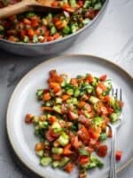

← All recipes
Jerusalem Salad (Palestinian Cucumber Tomato Salad)

Servings: 4 people · Prep: 20 mins · Cook: 20 mins
Ingredients
- Dressing
- 3 tablespoon Olive oil
- 2 tablespoon Lemon juice
- Salt and pepper to taste
- Salad Ingredients
- 4 Medium tomatoes - trimmed and chopped into small ½ inch cubes
- 4 Persian cucumbers - trimmed and chopped into small ½ inch cubes
- 1 Red bell pepper - seeded and chopped into small ½ inch cubes
- 3 Green onions - Chopped
- ¼ cup Flat leaf parsley - Finely chopped
- ¼ cup Fresh mint - Finely chopped (Optional, but recommended)
Directions
- Dressing. In a large bowl, add the olive oil, lemon juice, a big pinch of salt and fresh cracked black pepper. Mix well.
- Make salad. To the same bowl, add all the salad ingredients and mix well. Taste and adjust the seasoning.
Notes
Feel free to also add some lemon zest to your dressing.
Substitutions:
You can use an English cucumber instead of Persian. Scrape the seeds out before chopping.
Slicer or vine tomatoes are ideal, but you can use cherry or Roma tomatoes too.
Making Ahead: This Jerusalem salad can be made 1 day ahead of time, just don’t mix in the dressing in advance. Keep the chopped produce separate from the dressing in individual airtight containers and mix everything before serving. I also suggest you avoid salting the salad if you plan to make it ahead of time.
Serve the salad with mains like beef kebab, chicken kebab, Palestinian maftoul, za’atar chicken thighs, Moghrabieh, and musakhan (sumac chicken). I also love serving it with rice dishes like maqluba (upside down chicken and rice).
Other possible additions to the salad: Chili peppers, hot pepper flakes, chopped lettuce, and sumac.
Original source: urbanfarmandkitchen.com